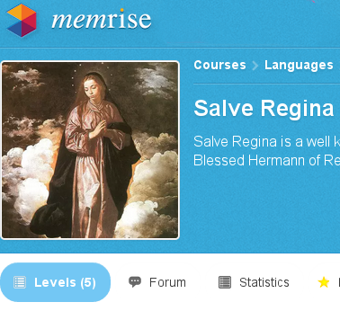

A free course I put together on memrise to help you learn the prayer Hail Holy Queen or Salve Regina in Latin and English. The program guides you through practising your new knowledge to help it take root in your memory.
Copy of the sheet music here.
This page hopes to open up Gregorian Chant to youngsters.
Gregorian chant is highly renowned for bringing peace and facilitating contemplation in the context of cloistered religious.
Children can sing chant too. Their pace is faster and sprightlier, but they can enjoy the chant melodies just like their parents.
This website was inspired by years of teaching chant to homeschoolers. It explores ways of extending limited face to face time with online resources.
For a classic book on learning the vocabulary of common Catholic prayers, see Fr Edward Caswall's book A Catholic's Latin Instructor
If you have any questions, thoughts, concerns or feedback, please don't hesitate to email me at hi@kidschant.com.